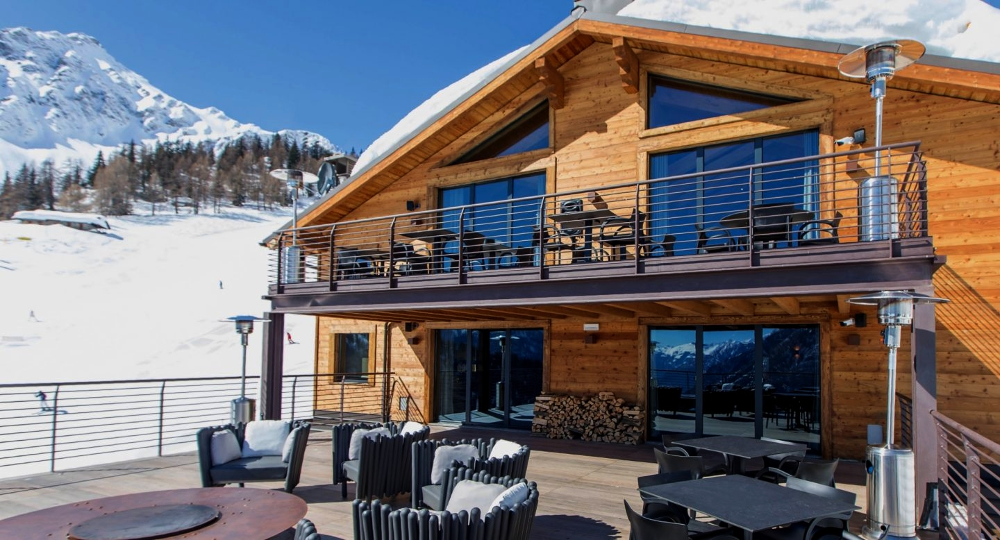
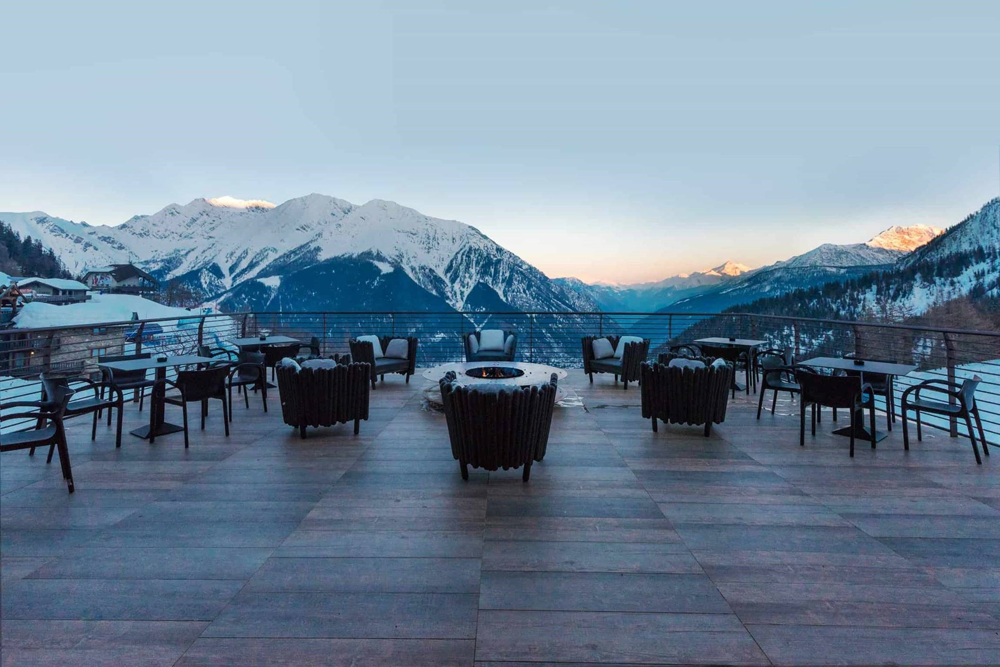
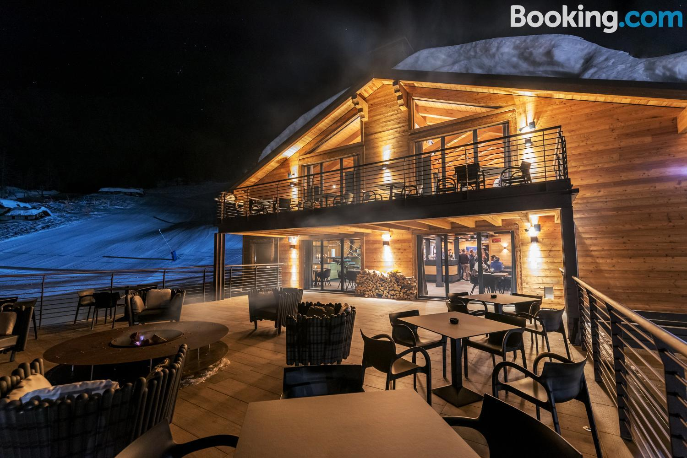
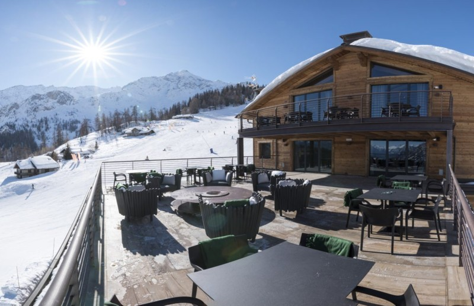
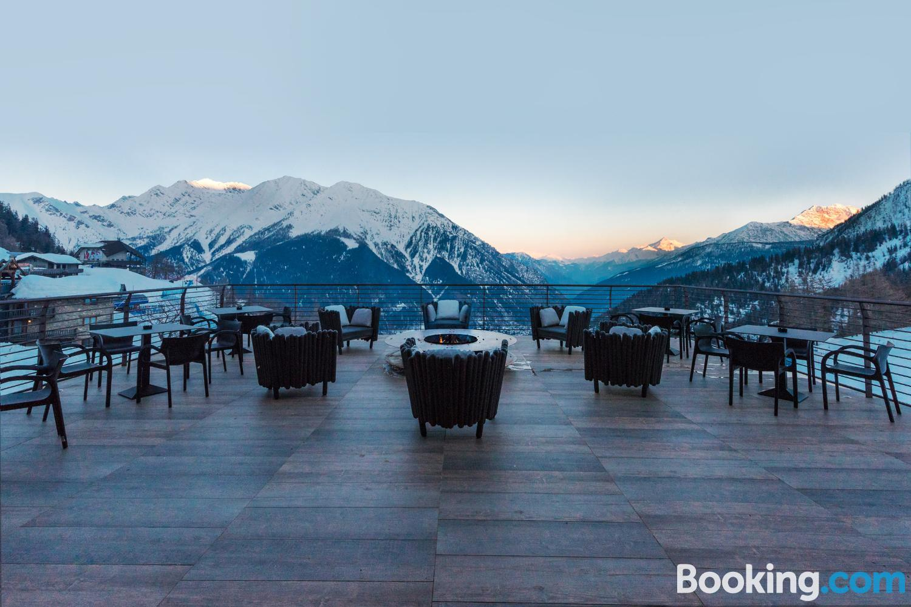
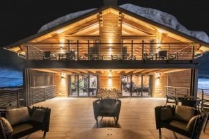
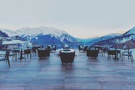
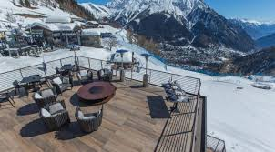
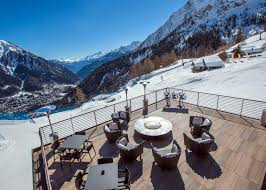
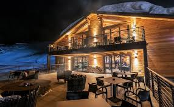

La Loge
du Massif
Una terrazza a quota 1.700 sul Monte Bianco: arredarla significa resistere a due metri di neve e restare eleganti quando il sole torna a batterci sopra.
Poltrone CanisseSedersi
davanti al Massiccio
Chalet in legno affacciato sulle piste, cucina d'altura e un dehors che d'inverno diventa il salotto più ambìto della valle. La committenza chiedeva sedute che non temessero gelo, sale antineve e sbalzi termici, ma che al tramonto avessero la morbidezza di un divano da interni.
La risposta è Canisse: la poltrona a canne verticali in polietilene tinto in massa, disposta a corona intorno al braciere. Un disegno che cita le stuoie di canne dei rifugi, ma nasce dallo stesso stampaggio rotazionale dei nostri vasi monumentali.

«Alle cinque del pomeriggio la terrazza è il posto più caldo della montagna.»
La sfida
Sedute lasciate fuori tutto l'inverno, sepolte dalla neve e scoperte al primo sole: nessun tessuto, nessuna verniciatura che possa sfogliarsi.
La scelta
Polietilene tinto in massa, resistente da −35 °C a +80 °C: il colore è il corpo dell'oggetto, i graffi della stagione non lo scoprono mai.
Il risultato
Una corona di poltrone intorno al fuoco, spostabili in pochi secondi e impilabili a fine stagione: il dehors cambia scena con il servizio.


Canisse,
una stuoia che accoglie
Canne verticali che avvolgono la seduta come una recinzione domestica: leggerezza visiva, massa sufficiente a non muoversi col vento di cresta. In antracite si legge come un elemento d'arredo e non come un complemento tecnico.

Il diario
della stagione
Scatti di servizio dal cantiere e dalle prime aperture: la stessa terrazza dall'alba alla notte.





in alta risoluzione
Cosa c'è
su questa terrazza
La fornitura per La Loge du Massif: le poltrone Canisse in antracite, disposte a corona intorno al braciere e sui tavoli del dehors.
cuscino di seduta — da fornire
Dove lo apriamo,
la prossima stagione?
Sopralluogo, selezione dei pezzi, colori dedicati e consegne programmate per fasi di cantiere.